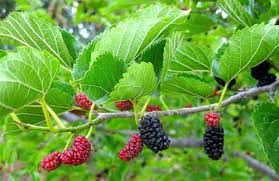
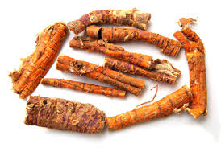

Tên khác:
Các bộ phận của cây dâu tằm đều có thể làm thuốc, Mạy môn (dân tộc Thổ); Dâu cang (dân tộc Mèo); Nằn phong (Dao); Tầm tang
Tên tiếng trung: 桑 白 皮
Tên dược: Cartex Mori.
Tên thực vật: Morus alba L.
Cây Dâu tằm:
( Mô tả, hình ảnh, thu hái, chế biến, thành phần hoá học, tác dụng dược lý ....)

Mô tả:
Cây gỗ, cao2-3 m. Lá mọc so le, hình bầu dục, nguyên hoặc chia 3 thùy, có lá kèm, đầu lá nhọn hoặc hơi tù. Phía cuống hơi tròn hoặc hơi bằng, mép có răng cưa to. Từ cuống lá tỏa ra 3 gân rõ rệt. Hoa đực mọc thành bông, có lá đài, 4 nhị (có khi 3). Hoa cái cüng mọc thành bông hay thành khối hình cầu, có 4 lá đài. Quả mọc trong các lá đài, màu đỏ, sau đen sẫm, ăn được, còn dùng làm thuốc hoặc ngâm rượu để uống, mùi thơm, vị chua ngọt.
Phân bố:
Cây ưa ẩm và sáng, thường được trồng trên diện tích lớn ở bãi sông, đất bằng, cao nguyên. Mùa hoa tháng 4-5, mùa quả tháng 5-7, ở Việt nam và trung quốc đều có Cây được trồng khắp nơi trong lấy lá nuôi tằm, làm thuốc.
Bộ phận dùng:
Vỏ rễ (Tang bạch bì – Cortex Mori).

Lá (Tang diệp – Folium Mori). Cành (Tang chi – Ramulus Mori).
Quả (Tang thầm – Fructus Mori). Tầm gửi trên cây Dâu (Tang ký sinh – Ramulus Loranthi).
Tổ bọ ngựa trên cây Dâu (Tang phiêu tiêu Ootheca Mantidis).
Tầm gửi trên cây dâu gọi là: Tang phiêu tiêu
Thành phần hoá học:
– Tang bạch bì: chứa mulberin, cyclomulberin, mulberochomen, cyclomulberochromen, mulberanol, oxydihydromorusin (morusinol), kuwanon, mulberofuran, albanol, albafuran, albafuran B, C. Ngoài ra, vỏ rễ còn chứa p-tocopherol, umberiferon, socopoletin, ethyl 2,4 - dihydrobenzoat, 5,7-dihydroxychoromon, morin (3,5,7,2’,4’- pentahydroxyfalavon) dihydromorin, dihydrokaemferol, acid betulenic, 2,4,4’,6-tetrahydroxybenzophenol (R=H), macrulin (2,3’,4,4’,6-pentahydroxybenzophenol (R=OH), sitosterol, resinotanol, moran A (glucoprotein).
– Tang diệp: chứa các thành phần bay hơi như tinh dầu (0,0035%), các thành phần không bay hơi gồm protein, carbohydrat, flavonoid, coumarin, vitamin… Các flavonoid: rutin, quercetin, moracetin (quercetin-3-triglucosid), quercitrin (quercetin 3- rhamnosid), isoquercitrin (quercetin-3- glucosid). Các dẫn chất coumarin: umbeliferon, scopoletin, scopolin. Các vitamin B, C, D, caroten. Các sterol: β-sitosterol, campesterol, β-sitosterol glycosid, β- ecdyson và inokosterol. Các acid hữu cơ: oxalic, malic, tartric, citric, fumaric, palmitic và ester ethyl palmitat.
– Tang chi: Cellulose, tanin, flavonoid.
– Tang thầm: Anthocyan (sắc tố màu đỏ của quả chín), đường (glucose, fructose), vitamin B1, C, tanin, protit và acid hữu cơ
Tác dụng dược lý:

+ Tác dụng lợi tiểu: cho thỏ nhà uống nước sắc tang bạch bì 2g/kg, thấy có sự gia tăng đáng kể lượng nước tiểu và clorua trong vòng 6 giờ, từ 7-24 giờ lượng nước tiểu trở lại bình thường
+ Hiệu quả hạ huyết áp: Nước sắc tang bạch bì có tác dụng hạ huyết áp từ từ, rễ và cành lá không có hiệu quả.
+ Thuốc sắc có tác dụng an thần, giảm đau, hạ nhiệt và chống co giật nhẹ.
+ Thuốc sắc có tác dụng ức chế tụ cầu vàng, trực khuẩn thương hàn, trực khuẩn lî Flexner và nấm tóc.
+ Thuốc chiết xuất nước nóng có tác dụng ức chế (in vitro) chủng JTC-28 tế bào ung thư tử cung khoảng 70%.
Vị thuốc tang bạch bì
( Công dụng, Tính vị, quy kinh, liều dùng .... )
Tính vị:
Tang bạch bì : vị ngọt, tính hàn. không độc
Tang thầm: ngọt hàn
Qui kinh:
Tang bì :phế.

tang thầm: tâm, can thậnCông năng:
thanh nhiệt ở phế và dịu hen. Lợi tiểu, chữa phù.
Liều dùng:
10-15g.
Ứng dụng lâm sàng của vị thuốc
Tang bì thường dùng chữa ho, lợi tiểu,
Ví dụ bài thuốc:
Tang Căn Bạch Bì (Tửu Nghiệm Phương.- Sa Đồ Mục Tô)
có tác dụng Tả phế, hành thủy, thanh phế, chỉ khái. Trị phế bị nhiệt, ho suyễn, đờm nhiều, cơ thể sốt, khát, ho ra máu.
Vị thuốc: Ngô du căn bì (vỏ rễ Ngô thù) 150g, Tang bạch bì 250g, Thái nhỏ nấu với 3 lít rượu, còn 1 lít, lọc bỏ bã. Chia làm 3 phần. Mỗi ngày uống 1 phần, lúc đói.
Hoàng Cầm Tả Bạch Tán (Chứng Nhân Mạch Trị, Q.4. Tần Cảnh Minh)
Tả phế nhiệt, lợi tiểu tiện. Trị phế nhiệt, tiểu bí, ho mà mặt phù, suyễn, ngực đầy, táo bón,
Vị thuốc: Cam thảo Địa cốt bì Hoàng cầm Tang bạch bì Sắc uống.
Một số bài thuốc có tang bạch bì
Hạnh nhân tang bì thang (Thẩm kim ngao) có tác dụng: Giáng khí, hóa đờm, nhuận phế, khai âm. Trị ho, khan tiếng
Tang bì ẩm ( chứng trị chuẩn thằng) gồm tang bì, hoàng cầm ...có tác dụng trị đau, ngứa ngoài da
Tang Bì Tiêm Thang ( Thẩm Thị Tôn Sinh Thư.-Thẩm Kim Ngao) Trị đầu ngón tay hoặc chân phát đau.
Tang Bì Tán (Tạp Bệnh Nguyên Lưu Tê Chúc (Tạng Phủ Môn), Q.1. - Thẩm Kim Ngao ) trị ho ra máu
Tham khảo
Tính vị qui kinh:
Sách Bản kinh: vị ngọt hàn. Sách
Danh y biệt lục: không độc.
Sách Y học khôi nguyên: khí hàn, vị đắng chua.
Sách Thang dược bản thảo: nhập thủ thái âm kinh.
Sách Lôi công bào chế dược tính giải: nhập tỳ phế.
Sách Dược phẩm hóa nghĩa: nhập 2 kinh Phế Đại tràng.
Bào chế:
- Dùng dao đồng cạo hết vỏ vàng xanh, thái nhỏ, sấy khô (Lôi Công Bào Chích Luận).
-Theo kinh nghiệm Việt Nam:
- Rửa qua, cạo sạch hết vỏ xanh và vàng ngoài, thái mỏng 2 - 3 ly, phơi khô (dùng sống).
- Sau khi phơi khô, tẩm mật ong sao vàng (1kg vỏ rễ tẩm độ 150g mật đã pha loãng 1/2 với nước).
+ Cạo bỏ vỏ mỏng bên ngoài, lấy phần trắng, đồ cho mềm đều, thái hoặc tước ra hoặc tẩm mật sao lên dùng (Đông Dược Học Thiết Yếu).
8. Chỉ định và phối hợp:
- Phế nhiệt biểu hiện như ho nhiều đờm và hen: Dùng phối hợp tang bạch bì với địa cốt bì và cam thảo dưới dạng tả bạch tán.
- Nước tiểu ít hoặc phù: Dùng phối hợp tang bạch bì với đại phúc bì và phục linh dưới dạng ngũ bì ẩm.
Nơi mua bán vị thuốc CÂY DÂU -TANG BẠCH BÌ đạt chất lượng ở đâu?
Trước thực trạng thuốc đông dược kém chất lượng, nguồn gốc không rõ ràng,... xuất hiện tràn lan trên thị trường, làm ảnh hưởng tới hiệu quả điều trị cũng như ảnh hưởng tới sức khỏe của bệnh nhân. Việc lựa chọn những địa chỉ uy tín để mua thuốc đông dược là rất quan trọng và cần thiết. Vậy khách hàng có thể mua vị thuốc CÂY DÂU -TANG BẠCH BÌ ở đâu?
CÂY DÂU -TANG BẠCH BÌ là vị thuốc nam quý, được sử dụng rộng rãi trong YHCT. Hiện tại hầu hết các cửa hàng thuốc đông dược, phòng khám đông y, phòng chẩn trị YHCT... đều có bán vị thuốc này. Tuy nhiên người mua nên chọn những địa chỉ có uy tín, đảm bảo chất lượng, có giấy phép hoạt động để mua được vị thuốc đạt chất lượng.
Với mong muốn bệnh nhân được sử dụng những loại dược liệu đúng, chất lượng tốt, phòng khám Đông y Nguyễn Hữu Toàn không chỉ là đia chỉ khám chữa bệnh tin cậy, uy tín chất lượng mà còn cung cấp cho khách hàng những vị thuốc đông y (thuốc nam, thuốc bắc) đúng, chuẩn, đạt chuẩn chất lượng. Các vị thuốc có trong tiêu chuẩn Dược điển Việt Nam đều được nghành y tế kiểm nghiệm đạt chất lượng tiêu chuẩn.
Vị thuốc CÂY DÂU -TANG BẠCH BÌ được bán tại Phòng khám là thuốc đã được bào chế theo Tiêu chuẩn NHT.
Giá bán vị thuốc CÂY DÂU -TANG BẠCH BÌ tại Phòng khám Đông y Nguyễn Hữu Toàn: Gọi 18006834 để biết chi tiết
Tùy theo thời điểm giá bán có thể thay đổi.
+ Khách hàng có thể mua trực tiếp tại địa chỉ phòng khám: Cơ sở 1: Số 481 lô 22 Lê Hồng Phong, Phường Gia Viên, Thành phố Hải Phòng
+ Mua trực tuyến: Thuốc được chuyển qua đường bưu điện. Khi nhận được thuốc khách hàng thanh toán tiền COD.
Tag: cay cay dau - tang bach bi, vi thuoc cay dau - tang bach bi, cong dung cay dau - tang bach bi, Hinh anh cay cay dau - tang bach bi, Tac dung cay dau - tang bach bi, Thuoc nam
Thaythuoccuaban.com Tổng hợp
*************************